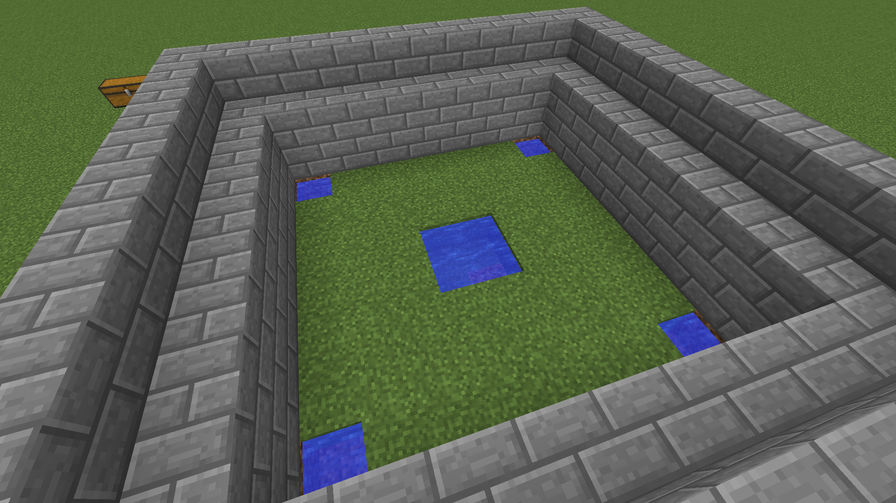
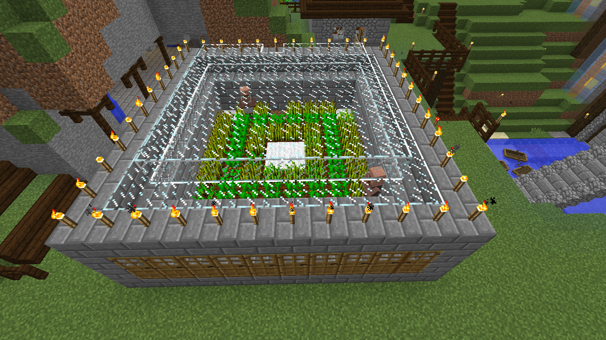

Villager Farma
Na farmu potrebujeme:
Postavíme 12X12 štvorec, Tip. Výpočty sa dajú robiť pomocou faklí (torch), tak ako na obrázku

Výška stavby je 4 blocky

Do rámu vložíme dvere

Do vnutra za dverami postavime blocky, a do trávy vložíme vodu ako na obrazku aby bola rovnomerne zavlchčená zem.
Na vodu položime koberce aby sa villigari, nezasekli vo vode
Zasadníme semiačka

Na záver môžme dať na vrch sklo aby bolo vidno dnu, či farma funguje.
